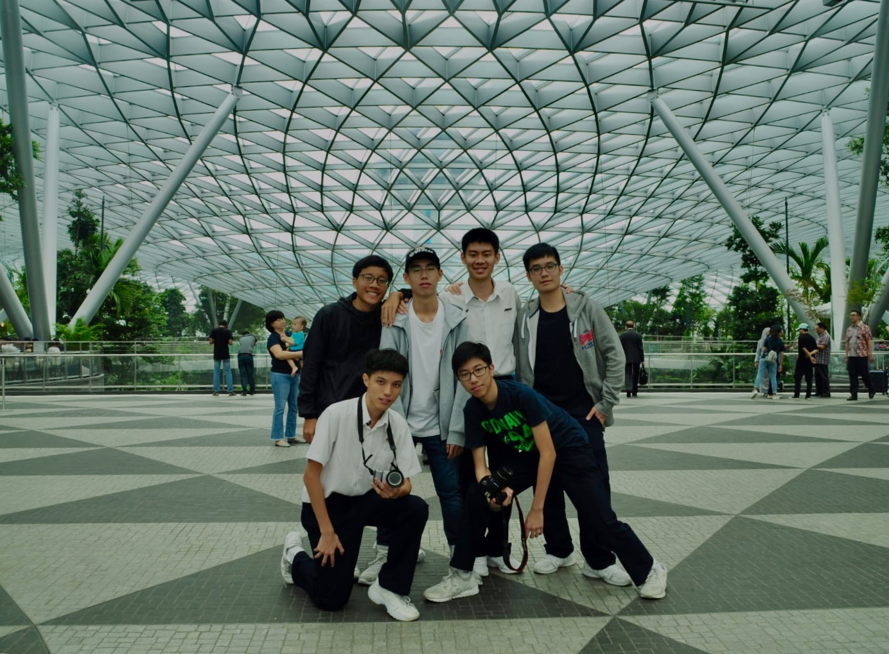

During my time in ACS(BR), I have met many different people and had many caring and supportive friends and teachers alongside me. There is very vibrant school culture and a strong school pride. The school has offered many opportunities to help us become leaders by example and a blessing to others.
My most valuable experience is during a VIA programme in Secondary Three called C21 where we travelled to Selangor, Malaysia and we helped out revitalize an orphanage with our Malaysian counterparts.
Graduation Night 2020
The iconic Clock Tower in the Barker Road Campus
My Seconadry 4 Class
C21@ACS(BR)
The Student Plaza
iCode Challenge @ NYP, 2019
CCA
Originally, I wanted to join Robotics Club due to my interest in coding, but got rejected. That was how I ended up joining Photography Club and developing my photography skills instead.
Throughout my 4 years in this CCA, I have learnt many photography techniques and other digital media skills such as using Adobe software for Photoshop and video editing. I was also active in photography duties for major school events, in which some of my photos were featured in my school's social media and magazine issues.
I was appointed Vice-Chairperson of the CCA in Secondary Three, where I work closely with my fellow leaders in the leadership team to plan CCA schedules, conduct trainings for our juniors and settle administration matters.
I showcase my photography skills on my Instagram page that you can find in my contact information on the page footer below if you are curious!
CCA Leadership Team, 2019
Photoshoot at Jewel with friends, 2020